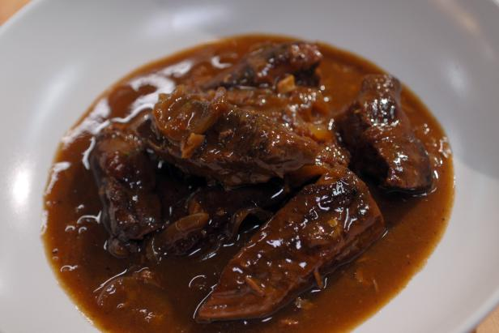

Beef&in&Beer

Ingredients
- 500g of cheap beef pieces(stewingsteakusuallyis cheap)
- 002mls of real ale
- 4 large of onions
- fat cloves of garlic
- tbsp of plain flour
Methods
- Rawbeef,roll it in the flour...fry in pieces at a time in a hot saucepan to
seal...put to one side when all done.
- cut theo nions into quarters...fry in the same frying pan as the beef...to soak up
the juices..
- Towards the end of frying the onion (they should be nicely brown round the edges) throw in the smashed up cloves of garlic. .
- Transfer the beef, onions, garlic to a deep casserole dish. Stir in the remaining flour.
- pour on the bottle of beer -‐ really, it isn't going to be wasted!!!
- Cover, and cook at 150 for about 2 and a half hours...will be gorgeous when it comes out, trust me...serve with mash !
Back